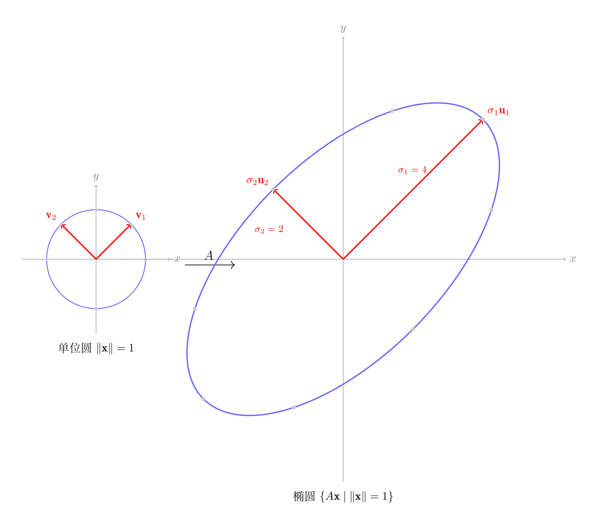

🌱 阶段 0 · 第 7 课
前面 00-05 学了特征值分解：对方阵 $A$，存在向量 $\mathbf{v}$ 使得：
$$A\mathbf{v} = \lambda \mathbf{v}$$$A$ 作用在 $\mathbf{v}$ 上，方向不变，只拉伸 $\lambda$ 倍。这很直观——但有一个致命限制：$A$ 必须是方阵。
现实中大多数矩阵是长方形的：1000 个样本 × 50 个特征 → $1000 \times 50$，神经网络权重 $256 \times 784$……这些都不是方阵，没法直接做特征值分解。
SVD（奇异值分解）就是特征值分解的推广——对任意形状的矩阵都有效。
你会的操作：矩阵 × 一个向量 = 一个新向量。比如：
$$A = \begin{bmatrix} 3 & 1 \\ 1 & 3 \end{bmatrix}, \quad A\begin{bmatrix} 1 \\ 0 \end{bmatrix} = \begin{bmatrix} 3 \\ 1 \end{bmatrix}$$现在换个思路：不只看一个向量，一次看很多个。
取 8 个均匀分布的方向（每 45° 一个），每个方向上取一个长度为 1 的向量。用 $A$ 分别去乘它们——看看每个向量被拉伸了多少、转到了哪个方向。
# 00-06 第一步：对8个方向上的单位向量，用A去乘，观察谁被拉得最长
# 导入numpy，别名np
import numpy as np
# np.array(嵌套列表) → 创建二维数组（矩阵）
A = np.array([[3, 1],
# 外层列表的每个元素是一行 → 2行2列
[1, 3]])
# 生成8个均匀分布的角度（360°/8 = 45°间隔）
# linspace(0,2π,9)：等间距生成 [0,π/4,π/2,...,2π] 共9个
angles = np.linspace(0, 2*np.pi, 9)[:-1]
# [:-1]：切片去掉最后一个(2π=0° 与第一个重复)
# 最终得到8个角度：0°,45°,90°,...,315°
# 表头——让输出一目了然
print("输入向量 → 输出向量 → 输出长度（拉伸倍数）")
# "-"*50 → 50个减号做分隔线
print("-" * 50)
# 遍历8个角度（弧度制）
for angle in angles:
# cos(θ)=x分量, sin(θ)=y分量 → 长度保证为1（cos²+sin²=1）
# 构造角度θ方向上的单位向量
v = np.array([np.cos(angle), np.sin(angle)])
# @ = 矩阵乘法：A(2×2) @ v(2×1) → w(2×1)
w = A @ v
# A把输入向量v变换成输出向量w
# norm() = 欧几里得长度 √(w[0]²+w[1]²)
stretch = np.linalg.norm(w)
# 值>1=被拉伸，值<1=被压缩
# f-string中 :+.2f = 带正负号保留2位小数（如 +0.71, -0.71）
print(f"v=[{v[0]:+.2f},{v[1]:+.2f}] → "
f"w=[{w[0]:+.2f},{w[1]:+.2f}] 拉伸={stretch:.2f}倍")
# 在8个方向中，找出拉伸倍数最大和最小的
# 列表推导式：对每个角度a，重复"构造单位向量→用A变换→量长度"
stretches = [np.linalg.norm(A @ np.array([np.cos(a), np.sin(a)]))
# 结果：8个拉伸倍数组成的列表
for a in angles]
# argmax：返回数组中最大值的索引位置
max_idx = np.argmax(stretches)
# argmin：返回数组中最小值的索引位置
min_idx = np.argmin(stretches)
# np.degrees(弧度) → 角度，:.0f = 取整
print(f"\n最大拉伸: {stretches[max_idx]:.2f}倍（角度 {np.degrees(angles[max_idx]):.0f}°）")
print(f"最小拉伸: {stretches[min_idx]:.2f}倍（角度 {np.degrees(angles[min_idx]):.0f}°）")
跑完你会发现：45° 方向（向量 [0.707, 0.707]）被拉了 4 倍——是所有方向里拉伸最多的。135° 方向只拉 2 倍——最少。
这两个特殊方向，就是 SVD 要抓的东西：
上面只看了 8 个方向。如果把所有可能的方向都考虑进来——每个方向上放一个长度为 1 的向量——这些向量的终点连起来就是一个单位圆。
用矩阵 $A$ 去乘圆上的每一个点，得到的点连起来就是一个椭圆。

# 00-06 第二步：用100个方向，密集采样，验证输出围成椭圆
# 导入numpy
import numpy as np
# 同一个矩阵 A（方便和第一步的结果对照）
A = np.array([[3, 1],
[1, 3]])
# 在单位圆上均匀取100个点——每个点 = 一个方向上的单位向量
# 从0到2π等间距生成100个角度
angles = np.linspace(0, 2*np.pi, 100)
# cos作用于数组每个元素 → (100,)数组，100个x坐标
circle_x = np.cos(angles)
# sin作用于数组每个元素 → (100,)数组，100个y坐标
circle_y = np.sin(angles)
# vstack：垂直堆叠 → (2,100)矩阵
circle = np.vstack([circle_x, circle_y])
# 第0行=所有x，第1行=所有y
# 每一列是一个单位向量（共100列）
# 用A同时乘所有100个向量 — 矩阵乘法的批量模式
# A(2×2) @ circle(2×100) → ellipse(2×100)：一次运算处理100个向量
# 结果：100个输出向量，每一列是一个输出点
ellipse = A @ circle
# 取出所有输出点的x和y坐标（方便查看范围）
# ellipse第0行、所有列 → 100个x值
x_vals = ellipse[0, :]
# ellipse第1行、所有列 → 100个y值
y_vals = ellipse[1, :]
# 输出点的x坐标范围
print(f"输出 x 范围: [{x_vals.min():.1f}, {x_vals.max():.1f}]")
# 输出点的y坐标范围
print(f"输出 y 范围: [{y_vals.min():.1f}, {y_vals.max():.1f}]")
# 计算每个输出点到原点的距离 — 即该方向上的拉伸倍数
# axis=0：沿列方向算norm → (100,)数组
distances = np.linalg.norm(ellipse, axis=0)
# 第i个元素 = 第i个输出向量的长度
# 距离最大的点的索引 → 椭圆长轴端点
max_idx = np.argmax(distances)
# 距离最小的点的索引 → 椭圆短轴端点
min_idx = np.argmin(distances)
print(f"\n椭圆长轴（最大拉伸）: 长度={distances[max_idx]:.1f}，方向=[{ellipse[0,max_idx]:.1f},{ellipse[1,max_idx]:.1f}]")
print(f"椭圆短轴（最小拉伸）: 长度={distances[min_idx]:.1f}，方向=[{ellipse[0,min_idx]:.1f},{ellipse[1,min_idx]:.1f}]")
结论：长轴指向 [2.83, 2.83] 方向，长度 ≈ 4；短轴指向 [-1.41, 1.41] 方向，长度 ≈ 2。
这两个方向互相垂直（点乘 = 2.83×(-1.41) + 2.83×1.41 = 0 ✓），它们是矩阵 $A$ 的左奇异向量。
有了上面的直觉，SVD 就是三件事的合并：
$$A = U \Sigma V^T$$| 矩阵 | 做什么 | 对应刚才看到的什么 |
|---|---|---|
| $U$ | 椭圆两个轴的方向（单位化） | 长轴方向 [0.707, 0.707] 和短轴方向 [-0.707, 0.707] |
| $\Sigma$ | 两个轴的长度 | 对角线上的 4 和 2——就是那两个拉伸倍数 |
| $V^T$ | 「这两个方向在被拉伸之前指向哪里」 | 长轴在被拉之前是 45°，短轴在被拉之前是 135° |
一句话： $V^T$ 把坐标轴转到位 → $\Sigma$ 沿这两个方向分别拉伸 → $U$ 把拉伸后的轴转到最终方位。三步走。
用代码验证。numpy 的 linalg.svd 一次返回三个值：U（左奇异向量矩阵）、s（奇异值的一维数组，按从大到小排）、VT（右奇异向量矩阵的转置）。s 里的每个数就是 $\Sigma$ 对角线上的 $\sigma_1,\sigma_2,\dots$。
# 00-06 第三步：用 numpy 的 SVD 函数，把 A 拆成 U Σ V^T 三步
# 导入numpy
import numpy as np
# 还是同一个矩阵，方便对照前面的结果
A = np.array([[3, 1],
[1, 3]])
# np.linalg.svd() 直接做奇异值分解，一次调用返回三个结果
# U=左奇异向量矩阵，s=奇异值(1D数组)，V^T=右奇异向量转置
U, s, VT = np.linalg.svd(A)
# s 是一维数组 [σ₁, σ₂]，不是对角矩阵
# U的每一列是输出椭圆的一个轴方向（单位向量）
print("U (椭圆轴方向) =\n", U)
# 奇异值 = 椭圆长轴和短轴的半径
print(f"\nΣ 对角线: σ₁={s[0]}, σ₂={s[1]}")
# V^T的每一行指向"被拉伸前"的方向
print("\nV^T (轴被拉伸之前的方位) =\n", VT)
# 验证：三步合成应等于原矩阵 A = U Σ V^T
# np.diag(1D数组) → 以该数组为对角线的方阵
Sigma = np.diag(s)
# s=[4,2] → Sigma=[[4,0],[0,2]]
# U(2×2) @ Σ(2×2) @ V^T(2×2) → (2×2)
A_rebuilt = U @ Sigma @ VT
# 顺序：V^T旋转→Σ拉伸→U旋转 = 原始变换
# 打印重建结果
print(f"\nU Σ V^T =\n{A_rebuilt}")
# allclose：考虑浮点误差的"近似相等"判断
print(f"等于 A？ {np.allclose(A, A_rebuilt)}")
上面的 $A$ 是 $2\times 2$ 方阵。换成 $3\times 2$ 长方形矩阵试试：
# 00-06 第四步：长方形矩阵（非方阵）也能做 SVD
# 导入numpy
import numpy as np
# 3行2列 —— 行数≠列数，不是方阵
A = np.array([[1, 2],
# 如：3个样本、每个有2个特征
[3, 4],
[5, 6]])
# 长方形矩阵照样做SVD，numpy自动处理
U, s, VT = np.linalg.svd(A)
# U: 3×3（原空间是3维）
# s: 只有min(3,2)=2个奇异值
# VT: 2×2（拉伸前的空间是2维）
# .shape属性：返回元组 (行数, 列数)
print(f"A 形状: {A.shape}")
# U的列是3维向量
print(f"U 形状: {U.shape} (椭圆轴在3维空间里)")
# 只有2个奇异值（列数=2）
print(f"奇异值: σ₁={s[0]:.2f}, σ₂={s[1]:.2f}")
print(f"V^T 形状: {VT.shape} (被拉伸前的方位，在2维空间里)")
# 验证 U Σ V^T = A。注意Σ需要是3×2才能和U、V^T匹配
# 构造3×2的Σ：左上角2×2对角块 = diag(s)，其余行补0
# np.zeros((行,列)) → 全0矩阵
Sigma = np.zeros((3, 2))
# 切片赋值：前2行×前2列 ← diag([σ₁,σ₂])
Sigma[:2, :2] = np.diag(s)
# 验证重建=原矩阵
print(f"\nU Σ V^T 等于 A？ {np.allclose(A, U @ Sigma @ VT)}")
$3\times 2$ 矩阵只有 2 个奇异值（因为只有 2 列——最多拉伸 2 个独立方向）。虽然输出是 3 维的，但椭圆实际躺在一个 2 维平面上。
前面用 numpy 的 linalg.svd 直接算出了奇异值。但奇异值不是凭空来的——它和之前学的特征值有紧密关系。这不是在重新推导 SVD，而是告诉你：如果你只会算特征值（00-05 学的），也能算出奇异值。
用课文里的 $A = \begin{bmatrix}3&1\\1&3\end{bmatrix}$ 来走一遍。前面 numpy 给出的奇异值是 $\sigma_1=4,\;\sigma_2=2$。
第一步：构造 $A^T A$。
$$A^T A = \begin{bmatrix}3&1\\1&3\end{bmatrix}\begin{bmatrix}3&1\\1&3\end{bmatrix} = \begin{bmatrix}10&6\\6&10\end{bmatrix}$$$A^T A$ 是一个全新的矩阵，和 $A$ 不一样。但它永远是对称方阵（$(A^T A)^T = A^T A$），所以可以做特征值分解。
第二步：算 $A^T A$ 的特征值。 用 00-05 的方法——迹 = 20，行列式 = 100−36 = 64，代入求根公式：
$$\lambda = \frac{20 \pm \sqrt{400-256}}{2} = \frac{20 \pm 12}{2} \;\Longrightarrow\; \lambda_1 = 16,\; \lambda_2 = 4$$注意：16 和 4 是 $A^T A$ 的特征值，不是 $A$ 的特征值。 $A$ 的特征值是 2 和 4（00-05 的对称矩阵例子里算过）。
第三步：开平方就是奇异值。
$$\sigma_1 = \sqrt{16} = 4, \qquad \sigma_2 = \sqrt{4} = 2$$和 numpy 的 SVD 结果一致。写成通式：
$$\boxed{\sigma_i = \sqrt{\lambda_i(A^T A)}}$$读法： $\lambda_i(A^T A)$ =「把 $A^T A$ 的特征值从大到小排，取第 $i$ 个」。括号里写的是哪个矩阵——$\lambda(A^T A)$ 是 $A^T A$ 的特征值，$\lambda(A)$ 才是 $A$ 的，别搞混。
为什么刚好是平方关系？ 把 $A$ 作用在一个右奇异向量 $\mathbf{v}$ 上：$A\mathbf{v} = \mathbf{w}$（$\mathbf{w}$ 是输出空间里的某个向量）。那么：
$$\|\mathbf{w}\|^2 = \mathbf{w}^T\mathbf{w} = (A\mathbf{v})^T(A\mathbf{v}) = \mathbf{v}^T A^T A \mathbf{v}$$如果 $\mathbf{v}$ 恰好是 $A^T A$ 的特征向量（对应特征值 $\lambda$），则 $A^T A\mathbf{v} = \lambda\mathbf{v}$，代入：
$$\|\mathbf{w}\|^2 = \mathbf{v}^T(\lambda\mathbf{v}) = \lambda\|\mathbf{v}\|^2 \;\Longrightarrow\; \lambda = \frac{\|\mathbf{w}\|^2}{\|\mathbf{v}\|^2} = \left(\frac{\|A\mathbf{v}\|}{\|\mathbf{v}\|}\right)^2$$$\frac{\|A\mathbf{v}\|}{\|\mathbf{v}\|}$ 就是 $A$ 把向量 $\mathbf{v}$ 拉长了几倍——这正是奇异值 $\sigma$ 的定义。所以 $\sigma = \sqrt{\lambda}$。推导只用了特征向量的定义和向量长度的平方展开，没有「$A^T$ 在同一个方向拉伸」这种不严谨的说法。
用代码验证：
# 验证：σ = √(A^T A 的特征值) — 奇异值和特征值的关系
# 导入numpy
import numpy as np
# 同样用2×2矩阵验证（和前面同一个A）
A = np.array([[3, 1],
[1, 3]])
# 第一步：计算 A^T A。任何矩阵乘自己的转置一定是方阵且对称
# A.T = 转置。A^T(2×2) @ A(2×2) → (2×2) 对称方阵
ATA = A.T @ A
# 对称性：(A^T A)^T = A^T (A^T)^T = A^T A ✓
# eigvals()：计算方阵的所有特征值，返回1D数组
eigvals = np.linalg.eigvals(ATA)
# 返回顺序不保证，需要手动排序
# sort()：从小到大 → [::-1]反转 → 从大到小
eigvals = np.sort(eigvals)[::-1]
# 这样第i个特征值对应第i个奇异值
# 第二步：奇异值 = √(特征值)
# np.sqrt()：对数组每个元素开平方根
sigma_from_eig = np.sqrt(eigvals)
# eigvals=[16,4] → sigma=[4,2]
# 第三步：直接用SVD算奇异值，验证两种方法结果一致
# _ 表示"我不关心这个返回值"，只要奇异值s
_, s, _ = np.linalg.svd(A)
# 应=[16,4]（因为σ=[4,2], λ=σ²）
print(f"A^T A 的特征值: {eigvals}")
# 应=[4,2]
print(f"sqrt(特征值) = {sigma_from_eig}")
# 应=[4,2]
print(f"SVD 奇异值 = {s}")
# allclose：判断两个数组是否近似相等
print(f"一致？ {np.allclose(sigma_from_eig, s)}")
SVD 的 $U$ 和 $V$ 都是正交矩阵，这不是巧合。秘密藏在两个「造出来」的对称矩阵里：
① $V$ 为什么正交？ $V$ 的列是 $A^T A$ 的特征向量。$A^T A$ 天生对称：
$$(A^T A)^T = A^T (A^T)^T = A^T A$$$A^T A$ 是实对称矩阵 → 回 00-05 的黄金性质：实对称矩阵的特征向量互相垂直 → 归一化后 $V$ 是正交矩阵（$V^T V = I$）。
② $U$ 为什么正交？ 同理，$U$ 的列是 $A A^T$ 的特征向量。$A A^T$ 也天生对称：$(A A^T)^T = A A^T$ → 特征向量垂直 → $U$ 正交。
| 对称 $A$ 的特征值分解 | 任意 $A$ 的 SVD | |
|---|---|---|
| 条件 | $A$ 本身对称 | $A$ 可以是任意矩形矩阵 |
| 输入基 | $Q$（$A$ 的特征向量） | $V$（$A^T A$ 的特征向量） |
| 输出基 | 同一个 $Q$ | $U$（$A A^T$ 的特征向量） |
| 缩放 | $\Lambda$（特征值） | $\Sigma$（奇异值 = $\sqrt{\lambda(A^T A)}$） |
| 正交性来源 | $A$ 对称 → 特征向量垂直 | $A^T A$ 和 $A A^T$ 对称 → 各自特征向量垂直 |
| 公式 | $A = Q\Lambda Q^T$ | $A = U\Sigma V^T$ |
核心逻辑完全一样：都是「换基 → 缩放 → 换回来」。对称 $A$ 是输入和输出空间重合的特例（$U=V=Q$），SVD 把它推广到了输入和输出空间不同的情况。
不用计算，凭直觉判断：$B = \begin{bmatrix} 5 & 0 \\ 0 & 0.1 \end{bmatrix}$ 对一个单位圆变换后，椭圆的长轴指向哪？长度是多少？短轴呢？
——考察：对角矩阵的奇异值就是对角线元素本身
特征值分解 $A = Q\Lambda Q^{-1}$ 和 SVD $A = U\Sigma V^T$ 最大的两个区别是什么？（提示：形状限制 + 正交性）
——考察：SVD 对任意形状有效、U 和 V 都是正交的
$A$ 是 $100\times 5$ 矩阵（100 个样本，5 个特征）。$A^T A$ 的形状是多少？有几个特征值？所以 $A$ 最多有几个奇异值？
——考察：奇异值个数 = min(m, n)